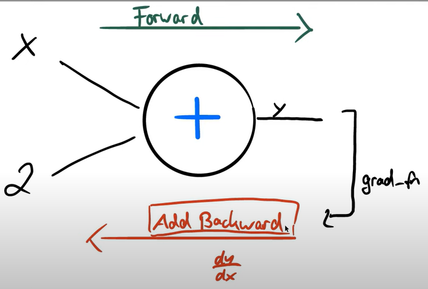
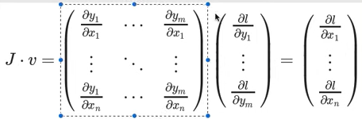
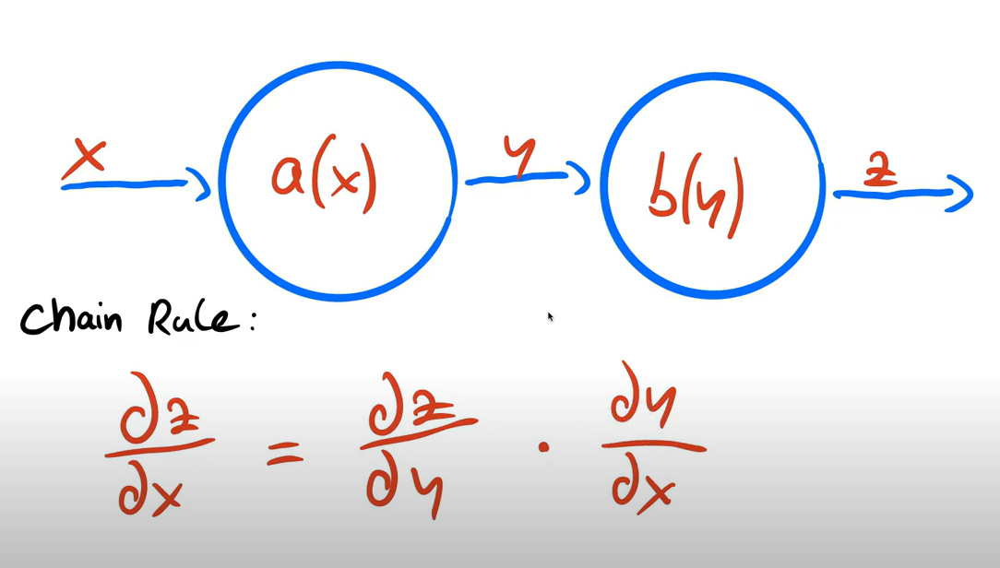
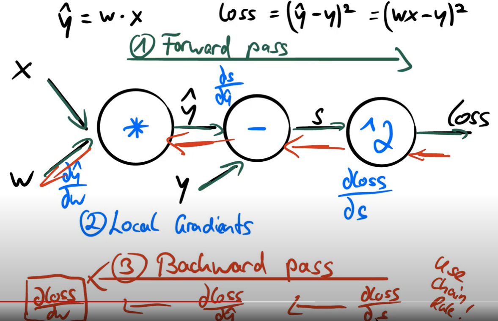
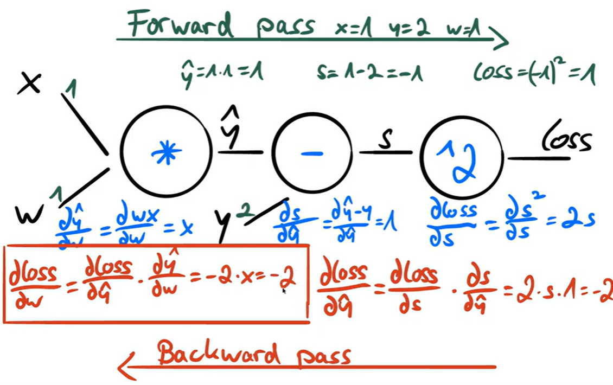
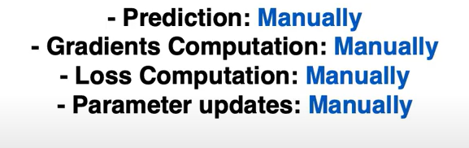

Tensor Basics
Contents
Tensor Basics¶
Numpy to tensor and some basics
import torch
x = torch.empty(2,3)
x
tensor([[-4.2744e-36, 7.4829e-43, -4.2744e-36],
[ 7.4829e-43, -4.2852e-36, 7.4829e-43]])
y= torch.rand(2,3,4)
y
tensor([[[0.3828, 0.1223, 0.8167, 0.9489],
[0.9877, 0.0279, 0.6409, 0.0136],
[0.4594, 0.9963, 0.7317, 0.9814]],
[[0.2899, 0.1401, 0.5109, 0.0346],
[0.4474, 0.9162, 0.4150, 0.3447],
[0.8109, 0.2745, 0.4454, 0.1662]]])
z = torch.ones(2,2)
z
tensor([[1., 1.],
[1., 1.]])
m = torch.ones(2,2, dtype= torch.double)#float16
m
tensor([[1., 1.],
[1., 1.]], dtype=torch.float64)
print(m.size())
torch.Size([2, 2])
h= torch.tensor([1.2, 1.])
h
tensor([1.2000, 1.0000])
type(h)
torch.Tensor
x= torch.rand(2,3)
y= torch.rand(2,3)
x
tensor([[0.4926, 0.7899, 0.9855],
[0.3979, 0.8036, 0.1439]])
y
tensor([[0.0355, 0.0699, 0.9515],
[0.6406, 0.8890, 0.0981]])
z= x+y
z
tensor([[0.5282, 0.8598, 1.9370],
[1.0385, 1.6926, 0.2420]])
z= torch.add(x,y)
z
tensor([[0.5282, 0.8598, 1.9370],
[1.0385, 1.6926, 0.2420]])
y
tensor([[0.0355, 0.0699, 0.9515],
[0.6406, 0.8890, 0.0981]])
#inplace add with add_
y.add_(x)
y
tensor([[0.5282, 0.8598, 1.9370],
[1.0385, 1.6926, 0.2420]])
#same for sub
z1= torch.sub(x,y)
z1
tensor([[-0.0355, -0.0699, -0.9515],
[-0.6406, -0.8890, -0.0981]])
z=x-y
z
tensor([[-0.0355, -0.0699, -0.9515],
[-0.6406, -0.8890, -0.0981]])
y
tensor([[0.5282, 0.8598, 1.9370],
[1.0385, 1.6926, 0.2420]])
y.sub_(x)
y
tensor([[0.0355, 0.0699, 0.9515],
[0.6406, 0.8890, 0.0981]])
same for mul - * and div - /¶
x= torch.rand(5,3)
x
tensor([[0.2292, 0.9762, 0.4058],
[0.5612, 0.4086, 0.0838],
[0.0322, 0.6826, 0.1581],
[0.4585, 0.0197, 0.0662],
[0.6568, 0.7877, 0.4334]])
x[1,:] #1 is the second(0,1,2...) row 行 and ：is all columns
tensor([0.5612, 0.4086, 0.0838])
x[1,1] # the second row and second column
tensor(0.4086)
x[1,1].item() # get the one element with actual value
0.4085797071456909
x= torch.rand(4,4)
y= x.view(16)# reshape from 4*4 to 16*1
y
tensor([0.6867, 0.1902, 0.2924, 0.5297, 0.5293, 0.7610, 0.7761, 0.6330, 0.2553,
0.5215, 0.9514, 0.9055, 0.9926, 0.1364, 0.0810, 0.8028])
z= x.view(-1,8)# reshape from 4*4 to any (-1 is decide by itself)* 8
z
tensor([[0.6867, 0.1902, 0.2924, 0.5297, 0.5293, 0.7610, 0.7761, 0.6330],
[0.2553, 0.5215, 0.9514, 0.9055, 0.9926, 0.1364, 0.0810, 0.8028]])
z.size
<function Tensor.size>
z.size()
torch.Size([2, 8])
Numpy to tensor¶
a = torch.ones(5)
a
tensor([1., 1., 1., 1., 1.])
type(a)
torch.Tensor
b= a.numpy()
b
array([1., 1., 1., 1., 1.], dtype=float32)
type(b)
numpy.ndarray
note inplace operation when pointing the same place¶
a.add_(1)
a
tensor([2., 2., 2., 2., 2.])
b
array([2., 2., 2., 2., 2.], dtype=float32)
tensor to numpy¶
h= torch.from_numpy(b)
h
tensor([2., 2., 2., 2., 2.])
b+=1 #inplace operation from numpy to tensor
b
array([3., 3., 3., 3., 3.], dtype=float32)
h
tensor([3., 3., 3., 3., 3.])
#windows
if torch.cuda.is_available():
device = torch.device("cuda")
x= torch.ones(5,device= device)#specify the gpu variable
y= torch.ones(5)
y= y.to(device)# or you can define it then move to gpu
z= x+y
z = z.to("cpu")
print(z)
tensor([2., 2., 2., 2., 2.])
x= torch.ones(5,requires_grad =True)# need to caculate the gradient
gradient¶
x= torch.randn(3)
x
tensor([2.2232, 0.0642, 1.2613])
x= torch.randn(3, requires_grad =True)# need to caculate the gradient
x
tensor([ 0.4714, 0.6199, -0.5976], requires_grad=True)
y = x+2

y # we can see backward for add
tensor([2.4714, 2.6199, 1.4024], grad_fn=<AddBackward0>)
z=y*y*2 # we can see backward for multiply
z
tensor([12.2159, 13.7278, 3.9337], grad_fn=<MulBackward0>)
h = z.mean()
h
tensor(9.9591, grad_fn=<MeanBackward0>)
h.backward() #dz/dx but it can not go second time and the requires_grad should be True
x.grad
tensor([3.2952, 3.4932, 1.8699])

v =torch.tensor([0.1,1.0,0.1],dtype=torch.float32)
v
tensor([0.1000, 1.0000, 0.1000])
b=y*y
b.backward(v)
x.grad
tensor([3.7895, 8.7330, 2.1504])
caculate with no gradient¶
x = torch.randn(3, requires_grad=True)
x
#x.requires_grad_(False)
#x.detach()
#with torch.no_grad()
tensor([ 2.1290, -1.6708, 0.7020], requires_grad=True)
x.requires_grad_(False)
tensor([ 2.1290, -1.6708, 0.7020])
x = torch.randn(3, requires_grad=True)
y=x.detach()
y
tensor([-0.4952, -0.6985, -1.1956])
x = torch.randn(3, requires_grad=True)
with torch.no_grad():
y=x+2
y
tensor([1.0999, 2.1869, 0.5150])
x
tensor([-0.9001, 0.1869, -1.4850], requires_grad=True)
accumulate the gradient¶
w = torch.ones(4, requires_grad=True)
for epoch in range(1):
model_output = (w*3).sum()
model_output.backward()
w.grad
tensor([3., 3., 3., 3.])
w = torch.ones(4, requires_grad=True)
for epoch in range(2):
model_output = (w*3).sum()
model_output.backward()
w.grad
tensor([6., 6., 6., 6.])
w = torch.ones(4, requires_grad=True)
for epoch in range(3):
model_output = (w*3).sum()
model_output.backward()
w.grad
tensor([9., 9., 9., 9.])
w = torch.ones(4, requires_grad=True)
for epoch in range(3):
model_output = (w*3).sum()
model_output.backward()
print(w.grad )
w.grad.zero_()
tensor([3., 3., 3., 3.])
tensor([3., 3., 3., 3.])
tensor([3., 3., 3., 3.])
#opt = torch.optim.SGD(w,lr=0.01)
#opt.step()
#opt.zero_grad()
#we should also prevent the optimizer sumup the gradient too



import torch
x= torch.tensor(1.0)
y= torch.tensor(2.0)
w= torch.tensor(1.0, requires_grad = True)
#foward pass and compute loss
y_hat = w*x
loss = (y_hat-y)**2
loss
tensor(1., grad_fn=<PowBackward0>)
#backward pass
loss.backward()
w.grad
tensor(-2.)
#update weight

import numpy as np
#f=w*x
# =2*x
#X= np.array([1,2,3,4],dtype=np.float32)
#Y= np.array([2,4,6,8],dtype=np.float32)
X= torch.tensor([1,2,3,4],dtype=torch.float32)
Y= torch.tensor([2,4,6,8],dtype=torch.float32)
w =0.0
#model prediction
def forward(x):
return w*x
#loss =MSE
def loss(y, y_predicted):
return ((y_predicted-y)**2).mean()
#gradient
#MSE = 1/N*(w*x-y)**2
#dJ/dw = 1/N 2x(w*x-y)
def gradient(x,y,y_prediected):
return np.dot(2*x, y_pred-y).mean()
a = forward(5)
print(f'Prediection before training:f(5) = {a:.8f}')
Prediection before training:f(5) = 0.00000000
#Training
learning_rate=0.1
n_iters =10
for epoch in range(n_iters):
#prediction = forward pass
y_pred = forward(X)
#loss
l= loss(Y,y_pred)
#gradients
dw = gradient(X,Y,y_pred)
# update weights
w-=learning_rate*dw
if epoch%1 == 0:
print(f'epoch {epoch+1}:w = {w:.3f}, loss ={l:.8f}')
print(f'Prediection before training:f(5) = {forward(5):.3f}')
epoch 1:w = 12.000, loss =30.00000000
epoch 2:w = -48.000, loss =750.00000000
epoch 3:w = 252.000, loss =18750.00000000
epoch 4:w = -1248.000, loss =468750.00000000
epoch 5:w = 6252.000, loss =11718750.00000000
epoch 6:w = -31248.000, loss =292968768.00000000
epoch 7:w = 156252.000, loss =7324218368.00000000
epoch 8:w = -781248.000, loss =183105470464.00000000
epoch 9:w = 3906252.000, loss =4577636646912.00000000
epoch 10:w = -19531247.200, loss =114440913551360.00000000
Prediection before training:f(5) = -97656236.000